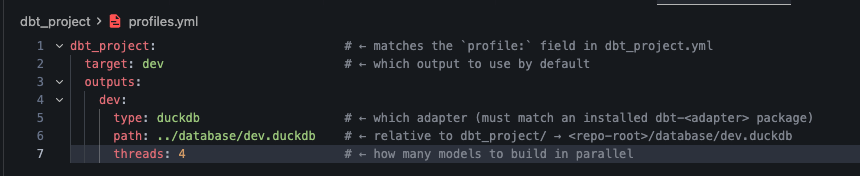

You ran dbt init last exercise and got a project skeleton. The skeleton describes what to build — model paths, project name, defaults. It says nothing about where to build it. That’s what profiles.yml is for.
| File | Describes | Travels with |
|---|---|---|
dbt_project.yml |
The project: name, paths, model defaults, materializations. | The repo — everyone on the team uses the same one. |
profiles.yml |
The connection: which warehouse, which credentials, which schema. | Often the developer’s machine — credentials don’t belong in git. |
By default dbt looks for profiles.yml at ~/.dbt/profiles.yml (your home dir). For this course we override that and keep it inside dbt_project/ so the whole project is self-contained — the verifier sets DBT_PROFILES_DIR=dbt_project/ when it runs dbt commands for you.
In a real team setup the connection config lives outside the repo (env vars, a secrets manager, dbt Cloud). Bundling it inside the project is a learning convenience, not a production pattern.
dbt_project: # ← matches the `profile:` field in dbt_project.yml
target: dev # ← which output to use by default
outputs:
dev:
type: duckdb # ← which adapter (must match an installed dbt-<adapter> package)
path: ../database/dev.duckdb # ← relative to dbt_project/ → <repo-root>/database/dev.duckdb
threads: 4 # ← how many models to build in parallel

The path is relative to wherever you run dbt from (typically dbt_project/), so ../database/dev.duckdb resolves to a single shared database/ directory at the repo root. Keeping the warehouse outside the project means dbt-learn reset can wipe dbt_project/ without nuking your raw data alongside it.
Key things to notice:
profile: field inside dbt_project.yml. dbt init set both to your project name, so as long as you don’t rename anything they line up.outputs is a map. Real teams have dev, ci, prod entries side by side and switch between them with --target ci. We only need dev.account, user, password, warehouse. BigQuery needs project, dataset, a keyfile path. DuckDB just needs a path.dbt debug — the smoke testOnce profiles.yml is in place, dbt debug tells you whether dbt can:
dbt_project.ymlprofiles.ymlSELECT 1)If all five pass you see All checks passed! (the walkthrough below shows the exact output to look for).
If any fail, dbt prints the exact step that broke. dbt debug is the first thing you run when something stops working — before dbt run, before reading model code, before anything else.
dbt_project.yml says profile: jaffle_shop but profiles.yml’s top-level key is dbt_project, dbt will say “Could not find profile named ‘jaffle_shop’.” Make them match.type:. — Without it, dbt doesn’t know which adapter to load and the error message is cryptic. Every output needs a type:.profiles.yml in the repo for a real warehouse. — Fine for DuckDB on a learning project. Never do it with credentials. Use env vars ({{ env_var('SNOWFLAKE_PASSWORD') }}) or a secrets manager.Press n to start the exercise.
1. Open a new terminal at the repo root (the directory that holds dbt_project/, database/, and curriculum.yaml).
2. Step into the project directory:
cd dbt_project
3. Create an empty profiles.yml file in the project directory:
touch profiles.yml
You should now have dbt_project/profiles.yml (empty). Confirm with ls profiles.yml.
4. Open dbt_project/profiles.yml in your editor and paste exactly this:
dbt_project:
target: dev
outputs:
dev:
type: duckdb
path: ../database/dev.duckdb
threads: 4
Save the file. A few things to notice:
dbt_project matches the profile: field in dbt_project.yml that dbt init generated. They have to match — that’s how dbt links the project to a profile.target: dev picks which output below to use. Real teams often have dev, ci, prod outputs side by side; we only need one.type: duckdb tells dbt which adapter to load. It must match the package you have installed (dbt-duckdb).path: ../database/dev.duckdb is the location of the DuckDB file, relative to dbt_project/. The .. walks up one level to the repo root, then into database/, where dbt creates dev.duckdb on its first run. Keeping the warehouse outside dbt_project/ means dbt-learn reset can wipe the project without losing raw data.threads: 4 is how many models dbt runs in parallel. 4 is fine for a laptop.5. Confirm dbt can read the file by running dbt debug from inside dbt_project/:
dbt debug
You should see a series of OK lines ending with All checks passed!. If you see anything else, scroll up and read the first failing line — that’s the one that matters.
6. Switch back to the dbt-learn CLI and press v to verify. The verifier runs the same dbt debug for you and reports the result.
Just one rule: dbt debug exits 0. That single check covers parsing dbt_project.yml, parsing profiles.yml, matching the project to a profile, opening a connection to DuckDB, and running a SELECT 1 smoke query.
All checks passed!
| Symptom | What to check |
|---|---|
Could not find profile named 'dbt_project' |
The top-level key in profiles.yml must match the profile: field in dbt_project.yml. |
Credentials in profile 'dbt_project', target 'dev' invalid |
Probably a missing or misspelled field — type: and path: are required. |
mapping values are not allowed in this context |
YAML indentation. Use spaces, never tabs. Two-space indent per level. |
IO Error: Cannot open file ".../database/dev.duckdb" |
Make sure the database/ directory exists at the repo root (ls database/ from the root). |
Press n to advance — next exercise loads the raw CSVs into DuckDB.